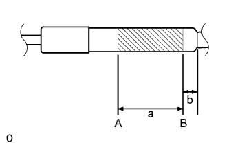

СТОЙКА ЗАДНЕГО ОКНА > СНЯТИЕ С ЭКСПЛУАТАЦИИ |
| 1. УТИЛИЗИРУЙТЕ ЛЕВУЮ СТОЙКУ ЗАДНЕГО ОКНА В СБОРЕ |
|  |
Зажмите стойку заднего окна в тисках в горизонтальном положении, чтобы шток поршня был выдвинут.
Надевайте защитные очки. Ножовкой медленно разрежьте участок между точками A и B, как показано на рисунке, и постепенно выпустите газ.
| Участок | Заданные условия |
| a | 80 мм (3,15 дюйма) |
| b | 20 мм (0,787 дюйма) |